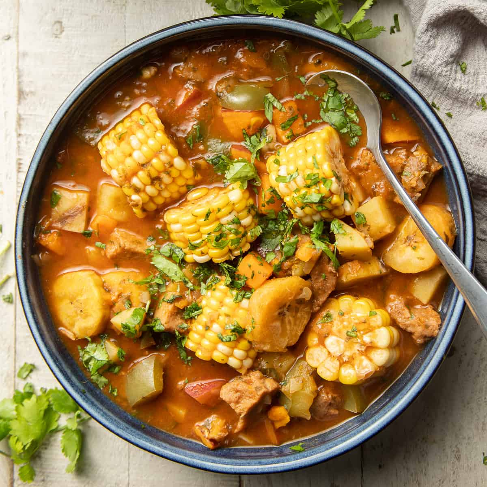

Sancocho

Description
Sancocho is a traditional soup in several Latin American cuisines. Variations of sancocho can be found in Colombia, Ecuador, Cuba, Panama, and Dominican Republic. It usually consists of large pieces of meat and vegetables served in a broth.
Ingredients
- 5 garlic cloves, minced
- 1/4 cup dried oregano
- 2 tsp salt
- 5 chicken drumsticks
- 1 lb. bone-in beef
- 1 lb. bone-in pork
- 2 lemons
- 2 onions
- 10 tbsp vegetable oil
- 1 tbsp vinegar
- 1 1/4 gal. water
- 14 fl. oz chicken broth
- 4 cubes beef bouillon
- 1 lb. potatoes
- 1/2 lb. yuca
- 2 ears of corn cut into quarters
- 1 large bell pepper, diced
Steps
- Mash garlic, oregano, and 1 tsp salt together in a bowl.
- Squeeze 2 lemons onto the chicken, beef, and pork in a large bowl.
- Add the garlic-oregano-salt mash from step 1 to the meat mixture.
- Add onion, 2 tbsp vegetable oil, and vinegar to the meat mixture.
- Heat the remaining 8 tbsp vegetable oil in a large skillet over medium-high heat.
- Add the meat mixture in batches and cook until brown on all sides.
- Transfer the cooked meat to a large pot.
- Add 3/4 gal. water, chicken broth, 2 cubes of beef bouillon, and 1 tsp salt.
- Bring to a boil, then reduce the heat to a low simmer, covered, for about 40 minutes until the meats are more than halfway cooked through.
- Add potatoes, corn, bell pepper, and cilantro to the simmering pot.
- Return soup to a boil, then reduce heat to low simmer for about 2 hours until the sancocho is thick.
- Add the remaining 3/4 gal. water and stir.
- Serve and enjoy!